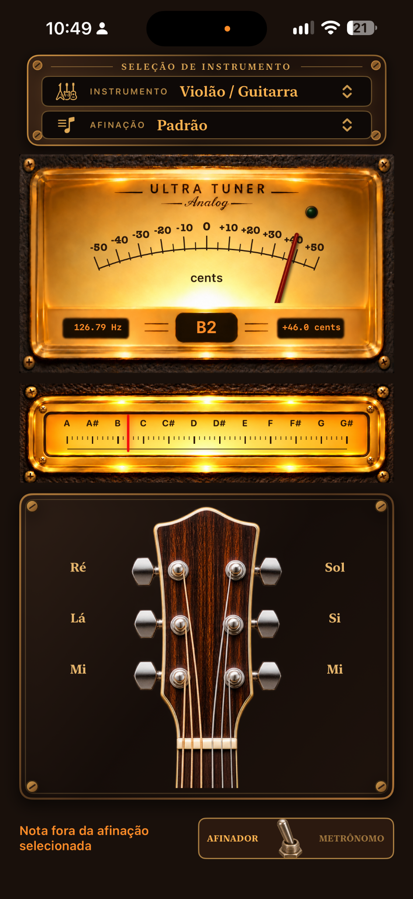
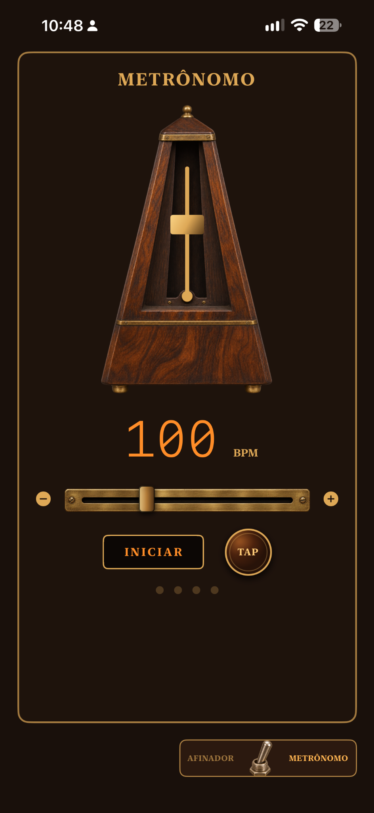

O som certo. O tempo certo.
Precisão digital.
Alma analógica.
Um afinador e metrônomo para iPhone com a presença dos equipamentos musicais clássicos.
COMPRA ÚNICASEM ANÚNCIOSSEM ASSINATURAS

01 / AFINADOR
Feito para tocar
Seu instrumento
sempre pronto.
Da primeira nota ao último compasso, o UltraTuner reúne as ferramentas essenciais para afinar e manter o ritmo em uma interface inspirada nos anos 1970.
01 — Afinador
Encontre a nota.
Sinta a afinação.
Reconhecimento automático pelo microfone do iPhone, leitura de nota e frequência, ponteiro em cents e referência visual das cordas.
- Violão e guitarra, baixo, ukulele, viola caipira e cavaquinho
- Seleção de instrumento e afinação
- Mostradores analógicos iluminados

02 — Metrônomo
O ritmo ganha
presença.
Um metrônomo com pêndulo animado e controle simples de andamento para estudo, ensaio e prática.
- Ajuste de BPM por controle deslizante e botões
- Tap Tempo para encontrar o andamento
- Visual de metrônomo mecânico clássico
Simples como deve ser
Compre uma vez.
Toque à vontade.
01
Compra única
Um pagamento pelo aplicativo, sem mensalidades.
02
Sem anúncios
Sua atenção fica na música.
03
Sem assinaturas
Sem cobranças recorrentes.
Estamos aqui para ajudar